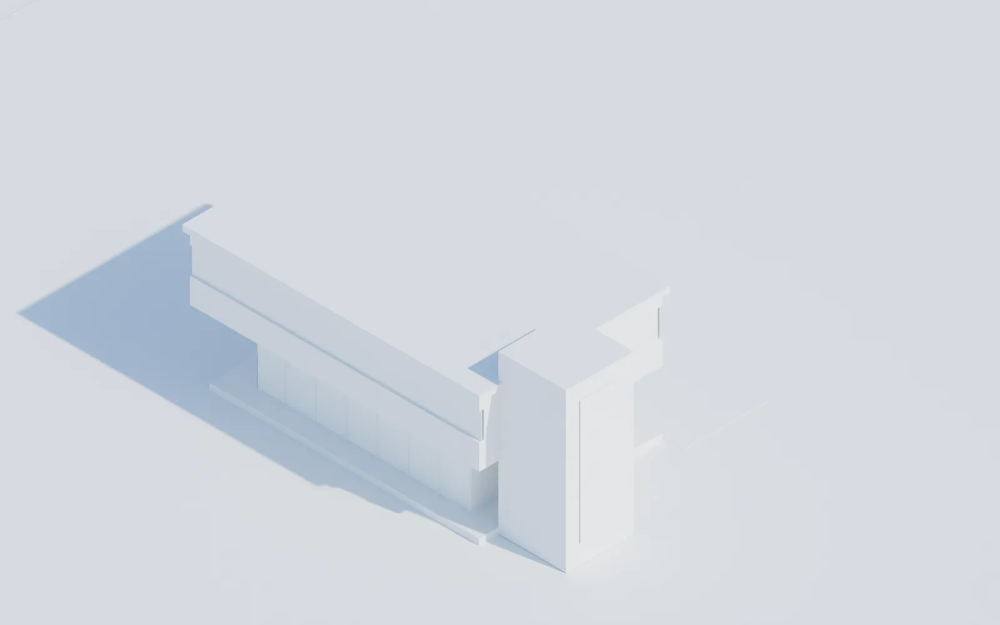
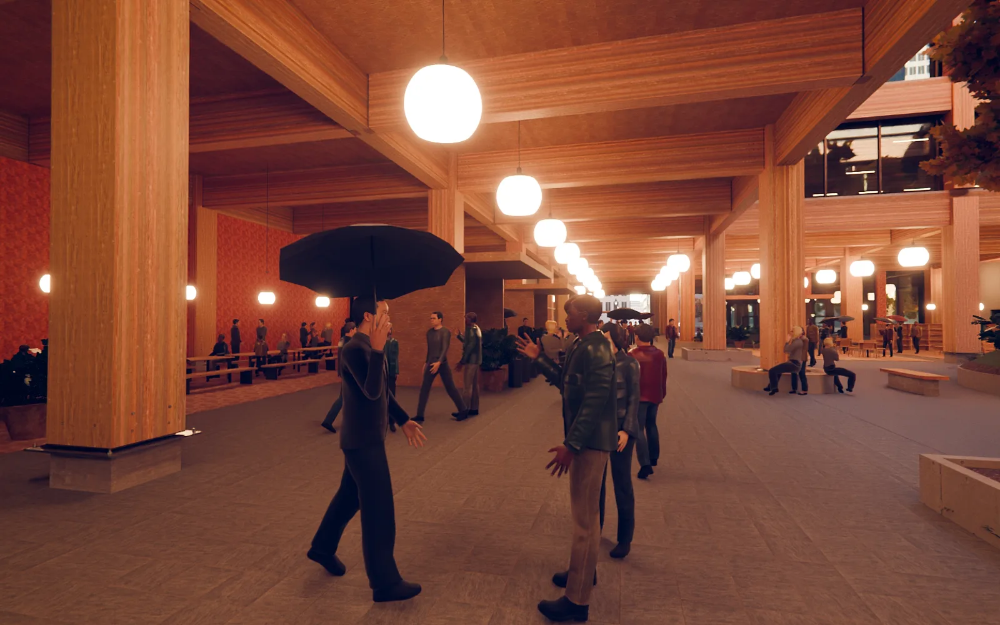
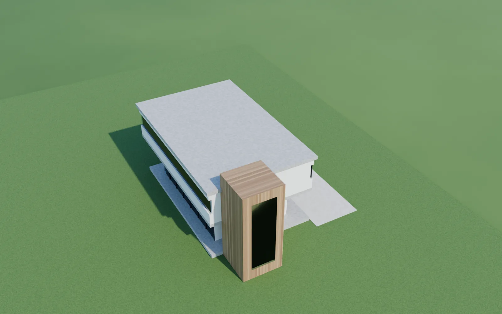

Architecture renders in Blender, in one click.
Amphion for Blender is a Blender add-on for architects. It imports Rhino .3dm, OBJ, FBX, glTF, STL and IFC models, fixes units and scale, turns layers into collections and assigns architectural materials (concrete, glass, wood, metal, white plaster, brick, grass, water). One click then sets up the real sun and sky for your site, date and time, a ground plane and an architectural camera, and renders with EEVEE or Cycles. It runs on Blender 4.2 to 5.x as an extension, on Mac, Windows and Linux. The first 10 renders are free, then 4 € a month.




Also in the panel
- Auto exposure: a tiny test render sets the exposure, so white buildings stay white and night shots are not black.
- AI render: turns your render into a photoreal image that keeps your geometry and camera. Add wishes like “oak cladding, autumn, people”.
- Export for 3D print: checks open edges and walls that are too thin at 1:50, 1:100, 1:200 or 1:500 and writes STL, 3MF or OBJ in millimetres.
- Two-point perspective: vertical lines stay vertical with lens shift, like an architectural photographer's camera.
- Large Rhino files: objects are merged per layer, far-away survey coordinates are moved near the origin automatically.
Pricing
| Option | Price | What you get |
|---|---|---|
| Free | 0 € | 10 saved renders or 3D print exports. Import, materials, scene setup and viewport previews are always free. |
| Subscription | 4 € / month or 40 € / year | Unlimited renders and exports, all updates. Cancel any time. |
| AI render credit | 0,25 € per image High quality 0,90 €, packs from 5 € | Optional photoreal images, credit never expires and also works in Amphion for Rhino and Amphion Tools. |
Prices plus VAT where applicable. Payment by Stripe in your browser. An Amphion licence unlocks everything.
Install
- Download amphion_blender.zip. Do not unzip it.
- Drag the zip onto the open Blender window and confirm. Or use Edit › Preferences › Get Extensions › ⌄ › Install from Disk.
- In the 3D view press
Nand open the Amphion tab.
Questions
Can I import Rhino .3dm files into Blender?
Yes. Amphion reads .3dm files from Rhino 5 to 8 directly with the bundled rhino3dm library: layers become collections, millimetres or centimetres become metres, blocks are resolved and polysurfaces are meshed, even when the file was saved without render meshes.
Which Blender versions are supported?
Blender 4.2 to 5.x, installed as an extension. Older versions are not supported.
What does it cost?
The first 10 saved renders or 3D print exports are free, then 4 € a month or 40 € a year. Import, scene setup and previews are always free. AI renders are optional and paid with credit.
Do I need an internet connection?
No. Rendering runs locally with EEVEE or Cycles. The add-on checks your free renders with a short timeout and keeps rendering when you are offline. Only the AI render needs the internet.
Is my model uploaded?
Never. Only the AI render sends one image of your view, and only when you click it. Nothing is used for training.
Which file formats can I import?
Rhino .3dm, OBJ, FBX, glTF and GLB, STL, PLY, Collada .dae (Blender 4.x) and IFC with the free Bonsai extension. From SketchUp, Revit or Archicad export FBX, OBJ, glTF or IFC.
Where are my images?
In your Pictures folder under Amphion, named with project, preset and time, for example Amphion_House_Final_20261109_173000.png.